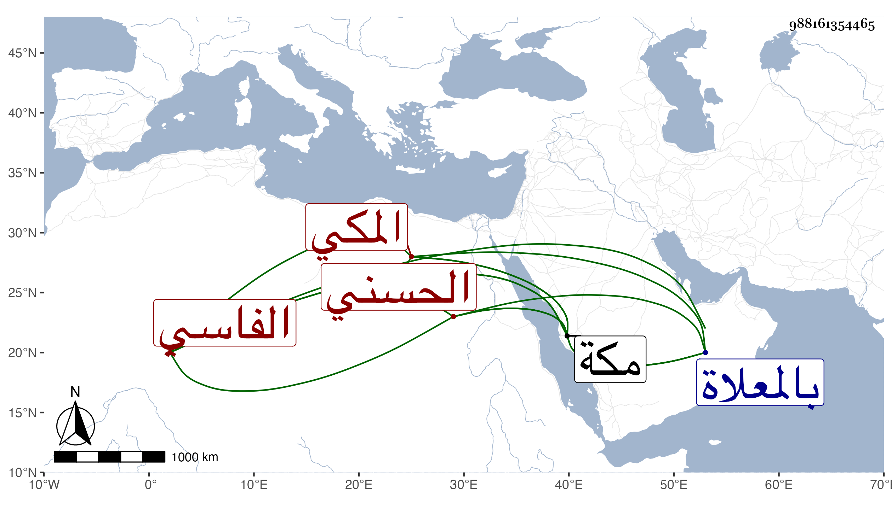

0902Sakhawi.DawLamic.ITO20230111-ara1.EIS1600.988161354465
Biography ID: 988161354465
726
كمالية ابنة الشريف عبد الرحمن بن أبي الخير محمد بن أبي عبد الله محمد الحسني الفاسي المكي ، تزوجها امير مكة الشريف حسن بن عجلان فأقامت عنده أياما وطلقها فتزوجها المحب أحمد بن الجمال بن ظهيرة في سنة سبع عشرة وولدت له أولادا وفارقها في سلخ رمضان سنة خمس وعشرين لعدم رضاها حين تزوج عليها أم الحسين ابنة عبد الرحمن اليافعي فما كان بأسرع من موت أم الحسين وتزويجه بصاحبة الترجمة أيضا في محرم التي تليها ومات عنها ، ثم ماتت بعده بشهرين وثلاثة أيام في حادى عشرى جمادى الآخرة سنة سبع وعشرين بمكة ودفنت بالمعلاة وقد بلغت الأربعين . ذكرها الفاسي .
